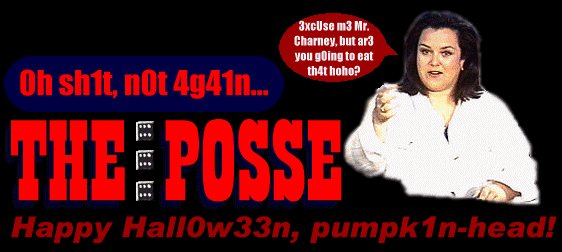

A Brief History Lesson
The Posse collective would like to remind both law enforcement and skript
kiddies alike that it is unwise to overlook the lessons of history and to forget one's roots.
In keeping with this, The Posse would like to pass onto the new school a few words that were given
to us when we were first starting out.
Another one got caught today, it's all over the papers.
"Teenager Arrested in Computer Crime Scandal", "Hacker Arrested after Bank Tampering"...
Damn kids. They're all alike.
But did you, in your three-piece psychology and 1950's technobrain, ever take a look behind the eyes of the hacker? Did you ever wonder what made him tick, what forces shaped him, what may have molded him?
I am a hacker, enter my world...
Mine is a world that begins with school... I'm smarter than most of the other kids, this crap they teach us bores me...
Damn underachiever. They're all alike.
I'm in junior high or high school. I've listened to teachers explain for the fifteenth time how to reduce a fraction. I understand it. "No, Ms. Smith, I didn't show my work. I did it in my head..."
Damn kid. Probably copied it. They're all alike.
I made a discovery today. I found a computer. Wait a second, this is cool. It does what I want it to. If it makes a mistake, it's because I screwed it up. Not because it doesn't like me... Or feels threatened by me... Or thinks I'm a smart ass... Or doesn't like teaching and shouldn't be here...
Damn kid. All he does is play games. They're all alike.
And then it happened... a door opened to a world... rushing through the phone line like heroin through an addict's veins, an electronic pulse is sent out, a refuge from the day-to-day incompetencies is sought... a board
is found.
"This is it... this is where I belong..."
I know everyone here... even if I've never met them, never talked to them, may never hear from them again... I know you all...
Damn kid. Tying up the phone line again. They're all alike...
You bet your ass we're all alike... we've been spoon-fed baby food at school when we hungered for steak... the bits of meat that you did let slip through were pre-chewed and tasteless. We've been dominated by sadists, or ignored by the apathetic. The few that had something to teach found us willing pupils, but those few are like drops of water in the
desert.
This is our world now... the world of the electron and the switch, the beauty of the baud. We make use of a service already existing without paying for what could be dirt-cheap if it wasn't run by profiteering gluttons, and you call us criminals. We explore... and you call us criminals. We seek after knowledge... and you call us criminals. We exist without skin color, without nationality, without religious bias... and you call us criminals. You build atomic bombs, you wage wars, you murder, cheat, and lie to us and try to make us believe it's for our own good, yet we're the criminals.
Yes, I am a criminal. My crime is that of curiosity. My crime is that of judging people by what they say and think, not what they look like. My crime is that of outsmarting you, something that you will never forgive me for.
I am a hacker, and this is my manifesto. You may stop this individual, but
you can't stop us all... after all, we're all alike.
H4ppy H4ll0w33n pUmpk1nh3adz,
Greets out 2:
Gary Dell'Abate, Scott Charney, Paul Coggins, Gale Thackeray, Terry Atchley,
Kurt Von Brauch, Don Delaney, Chris Goggans Tsutomu Shimomoura, Justin Tanner Peterson,
John Markhoff, John Perry Barlow, Netta Gilboa, Corey Braun, Peter "HFG" Shipley,
Berferd, Dan Farmer, Wietse Venema, Dale Drew, Joshua Quittner, Stephanie Hanna,
Joe Cuervo and Jim Beam.
Kick in the colostomy bag out 2:
gH, Eric Burns, mosthated, mindphasr, Kevin Mitnick, Kevin Poulsen, Phiber Optik,
John Draper, Emmanuel Goldstein, SOB!, 9X, EL8, #pascal, team spl0it,
attrition.org,
Kit Knox, b4b0, AntiOnline, HackerNews.com, Zo0mer, mozy, m1crochip, in0de,
#bolo, Red Knight, slack packet, Israeli Ghost, infam0us, f0rpaxe, HFX international,
kimmy, Rosie O'Donell and all K-MART employees.